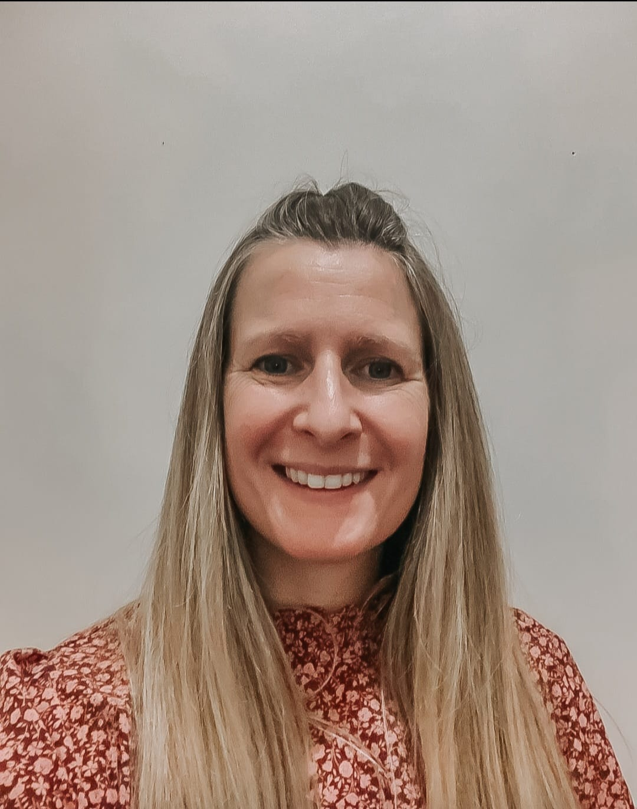

About Becky
Hello, I’m Becky Frain, a Person Centered Therapist based in Warrington, Cheshire. I offer both online and in‑person counselling sessions. In‑person sessions take place in Warrington, Lymm or Altrincham.
After years of training and other personal and professional experiences, I have the skills and compassion to create a safe space for you to speak freely about whatever is troubling you, weighing you down or holding you back. I believe that everybody deserves a space to be heard and understood. My warm and welcoming approach helps clients to feel safe, valued and empowered to explore their experiences.
My background is in mental health, substance misuse and working with armed forces personnel. I spent many years working with young neurodivergent adults and, more recently, have been honoured to work with survivors of childhood abuse.
I feel incredibly lucky to have had the opportunity to train as a counsellor—it has changed my life. It is an absolute privilege to walk alongside clients as they navigate their past and present to move toward living life in a way they want and deserve.
Choosing a counsellor is incredibly important. I recommend an introductory call with any potential counsellor to get a sense of who they are and whether you’re likely to feel at ease with them. It’s your time and space, and it needs to feel like a relationship in which you feel safe and heard. If you do not feel at ease, you will not feel able to explore difficult emotions. A good counsellor will always make it clear that you need to be happy in the relationship.
I chose to train in Person Centered Therapy as I believe it provides the best opportunity to facilitate a space where you feel at ease and, in your own time, can begin to get to know yourself fully. I can draw upon CBT (Cognitive Behavioural Therapy) techniques where helpful, but my main focus is Person Centered Therapy.
You may feel stuck, anxious or low. Maybe you feel constantly afraid of letting others down, unsure of what you really want for yourself, or struggle with boundaries. You might feel trapped in a life that doesn’t serve or fulfil you. I believe that for many people therapy can be life‑changing and help you move toward the life you deserve.
Start your journey with me
I offer a free 20‑minute consultation so we can discuss what you’re looking for and whether we might work well together.
Arrange a consultation